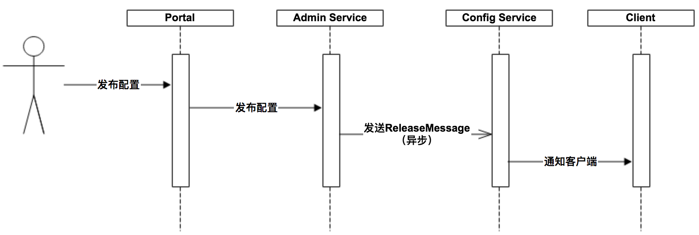
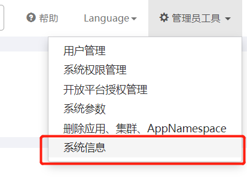
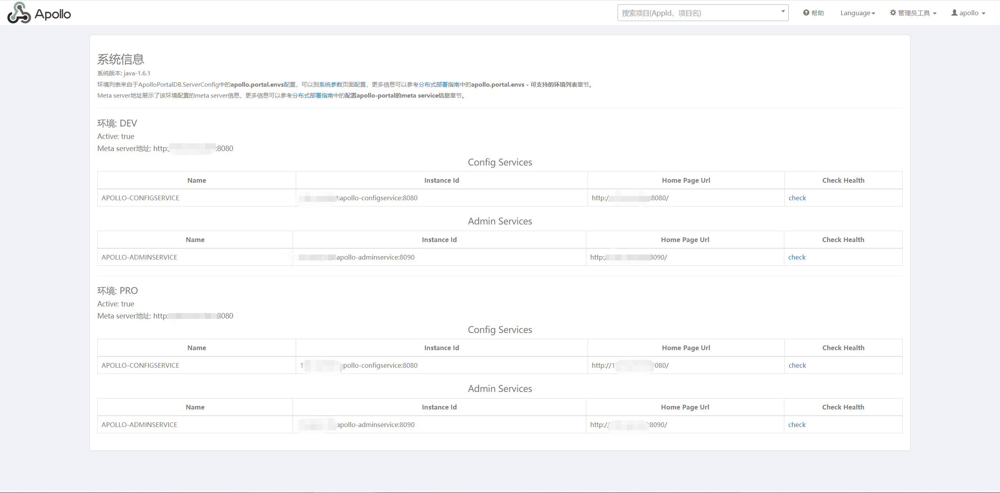
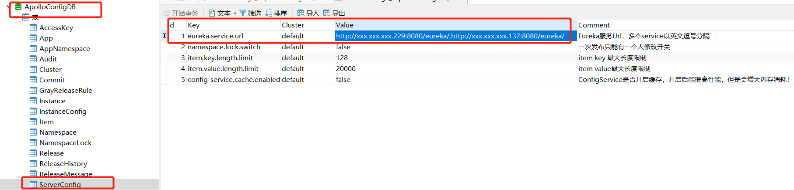

部署配置中心之Apollo服务
访问策略如图，Apollo整体由三个部件Portal、apollo-configservice和apollo-adminservice(占用端口8070, 8080, 8090)组成：

1 各模块概要介绍
1.1 Config Service
- 提供配置获取接口
- 提供配置更新推送接口（基于Http long polling）
- 服务端使用Spring DeferredResult实现异步化，从而大大增加长连接数量
- 目前使用的tomcat embed默认配置是最多10000个连接（可以调整），使用了4C8G的虚拟机实测可以支撑10000个连接，所以满足需求（一个应用实例只会发起一个长连接）。
- 接口服务对象为Apollo客户端
1.2 Admin Service
- 提供配置管理接口
- 提供配置修改、发布等接口
- 接口服务对象为Portal
1.3 Portal
- 提供Web界面供用户管理配置
- 通过Meta Server获取Admin Service服务列表（IP+Port），通过IP+Port访问服务
- 在Portal侧做load balance、错误重试
1.4 Client
- Apollo提供的客户端程序，为应用提供配置获取、实时更新等功能
- 通过Meta Server获取Config Service服务列表（IP+Port），通过IP+Port访问服务
- 在Client侧做load balance、错误重试
2 准备部署
点击下载：apollo-portal、apollo-configservice和apollo-adminservice。
准备SQL文件：apolloportaldb.sql，apolloconfigdb.sql。
若是由源码打包文件，则clone apollo，使用
scripts/build.sh进行打包。
2.1 部署
准备DEV、PRO俩环境，模拟开发和生产环境。
apollo-configservice和apollo-adminservice在两台机器上都进行部署。
Portal随便部署到哪一台都可以。
2.1.1 configservice、adminservice部署
两者config\application-github.properties相同。
1 | # DataSource |
此处不属于高可用部署，只是管理多环境，所以各个环境使用各自的MySQL即可。
2.1.2Portal
表设置
ApolloPortalDB.ServerConfig中的apollo.portal.envs（例如设置为：dev,pro，逗号分割）。该参数用于指定现在已有的环境。
config\apollo-env.properties修改：
1 | dev.meta=http://xxx.xxx.xxx.229:8080 |
config\application-github.properties
1 | # DataSource |
至此，所有修改均已完成。
运行apollo-configservice和apollo-adminservice的scripts\startup.sh脚本。
Portal等待其他模块启动到位后，启动。
完成未报错的情况下，访问Portal地址：xxxxxxx:8070，账号/密码：apollo/admin。
启动时，若遇到
mkdir: cannot create directory ‘/opt/logs’: Permission denied，则需要确认用户是否有权限，没有则修改scripts/startup.sh中的LOG_DIR。
点击右上角“系统信息”：

可以看到部署的环境节点信息：

3 高可用部署(集群使用)
假设我们将dev环境设置为高可用。
3.1 配置文件修改
修改Portal配置文件config\apollo-env.properties：
1 | dev.meta=http://xxx.xxx.xxx.229:8080,http://xxx.xxx.xxx.137:8080 |
修改configservice、adminservice配置文件config\application-github.properties，数据库均指向同一数据库：
1 | # DataSource |
3.2 数据库配置修改
ApolloConfigDB.ServerConfig数据库表修改参数eureka.service.url：
如图所示的修改的意思是：dev环境下A、B两台机器，将config Server的信息全部填入（这里两台机器指向的MySQL是一台）。同样的，要是加了一个Pro生产环境，就在Pro环境的MySQL上把config Server的地址，填入eureka.service.url参数中。

以上修改完成后，Portal就会自动分发请求了。
更为细节部分请参阅官方手册，分布式部署指南。
这里的配置指的是，一个环境下，有多个节点提供服务，那这里填入的就是当前环境的eureka配置。
每个环境只填入自己环境的eureka服务地址，比如FAT的apollo-configservice是1.1.1.1:8080和2.2.2.2:8080，UAT的apollo-configservice是3.3.3.3:8080和4.4.4.4:8080，PRO的apollo-configservice是5.5.5.5:8080和6.6.6.6:8080，那么：
- 在FAT环境的ApolloConfigDB.ServerConfig表中设置eureka.service.url为：
1 | http://1.1.1.1:8080/eureka/,http://2.2.2.2:8080/eureka/ |
- 在UAT环境的ApolloConfigDB.ServerConfig表中设置eureka.service.url为：
1 | http://3.3.3.3:8080/eureka/,http://4.4.4.4:8080/eureka/ |
- 在PRO环境的ApolloConfigDB.ServerConfig表中设置eureka.service.url为：
1 | http://5.5.5.5:8080/eureka/,http://6.6.6.6:8080/eureka/ |
4 Go访问
使用第三方库agollo。
测试：
1 | func main() { |
本文标题：部署配置中心之Apollo服务
文章作者：小师
发布时间：2020-06-09
最后更新：2022-04-07
原始链接：chunlife.top/2020/06/09/部署配置中心之Apollo服务/
版权声明：本站所有文章均采用知识共享署名4.0国际许可协议进行许可